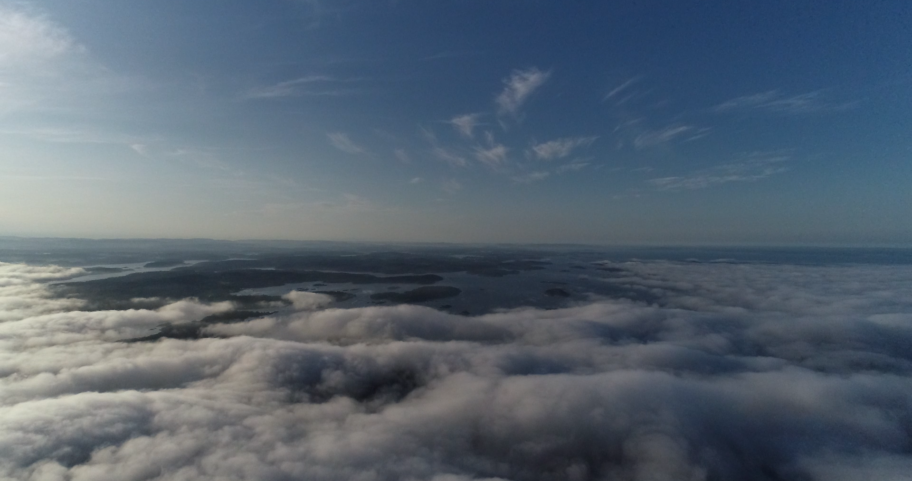

In 2020, 70% of US elections went uncontested. Run For Office lets young people find local elections and gets them to start a campaign with the help of friends.
Run For Office highlights the highest-impact, vacant or uncontested elections; It also helps partner candidates with advisors to take the next step.
We aggregate all the nitty gritty: election deadlines, qualifications, and incumbent history in a mobile campaign dashboard.
I’ve been excited to watch young candidates use it in the 2022 midterm election and see them get elected to local office.
I’ve been excited to watch young candidates use it in the 2022 midterm election and see them get elected to local office.
The Island Documentarian
I filmed a documentary about a small island on the coast of Norway trying to uphold an unusual social contract of shared land ownership while welcoming outsiders into the community. Set to release in 2023
In addition to ethnographic interviews and documentary footage, I shot and worked with over 20 hours of drone footage, carefully looking to capture beautiful moments in nature. View as seen looking up from Vestfold .

ohyayCreative Video Confrencing
ohyay enables people to construct highly-advanced 3D spaces. I built dozens. This one allows participants to navigate multiple viewpoints and hear ambient conversations — a first for video conferencing.
And this one allows people to play hide-and-seek in a virtual space:)
ohyay x Music Rising: I explored a first iteration that brought musicians filmed in a mixed-reality studio into virtual ohyay spaces.
A second iteration of research used projections and monitors to place digital participants in a real-world space — and live cams to place physical participants in a digital one.
A third iteration applied these experiments at a live cocktail party. Portals equipped with monitors, directional speakers, and shotgun mics bridged guests between LA and NY.
Snapchat LensAR Design
I built this AR landmark as a digital sculpture to experience in your hand. The lens is activated by a physical card which allows the viewer to play with it. It gained over 75k interactions.
Chords2CureDocumentarian
In a multi-year project with cancer survivors, I worked to document and present their stories in a new light. Here, I used a tennis game as a metaphor for their struggle and perseverance.
Previously in this minute-long sequence, I used infographics and symbols to communicate difficult statistics about pediatric cancer.
Product Sketching
I’ve worked on product sketching and applied it to problems I want to solve. For example, I worked on a shoe idea with a mechanism to open and close your heel without a hand.
In an iteration of the shoe, I worked on a heel that can fold into a slipper.